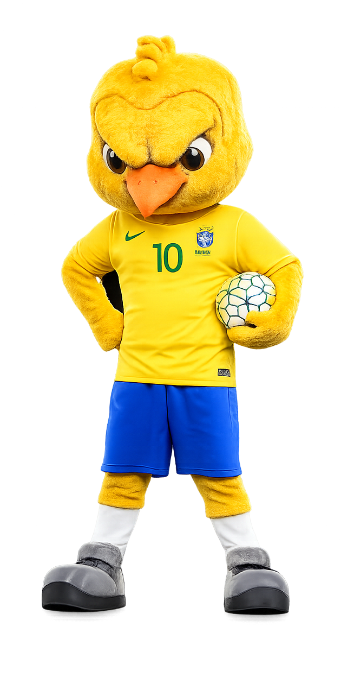
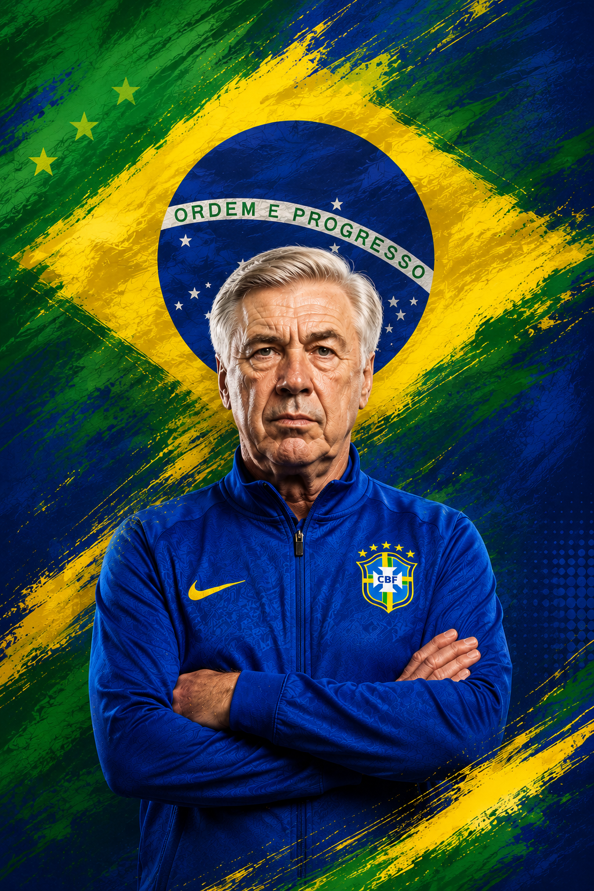

MOMENTOS HISTÓRICOS
1958 — O primeiro título mundial Na Copa do Mundo FIFA de 1958, o Brasil conquistou sua primeira Copa com um time lendário liderado por Pelé e Garrincha. A final contra a Seleção Sueca terminou em 5x2.
1962 — Bicampeonato no Chile Na Copa do Mundo FIFA de 1962, mesmo com a lesão de Pelé, Garrincha brilhou e carregou o Brasil ao bicampeonato mundial.
1970 — O maior time da história A campanha da Seleção Brasileira na Copa do Mundo FIFA de 1970 é considerada uma das maiores da história do futebol. O time de Pelé, Jairzinho, Rivelino e Carlos Alberto Torres venceu a Seleção Italiana por 4x1 na final.
1982 — O time que encantou o mundo Mesmo sem conquistar o título na Copa do Mundo FIFA de 1982, a seleção de Zico, Sócrates e Falcão ficou marcada pelo futebol ofensivo e artístico.
1994 — O tetra nos pênaltis Nos Estados Unidos, o Brasil conquistou o tetracampeonato na Copa do Mundo FIFA de 1994 após vencer a Seleção Italiana nos pênaltis. Romário foi o grande destaque.
2002 — O penta histórico Na Copa do Mundo FIFA de 2002, o Brasil conquistou o pentacampeonato com o trio Ronaldo Nazário, Ronaldinho Gaúcho e Rivaldo. Ronaldo marcou dois gols na final contra a Seleção Alemã.

